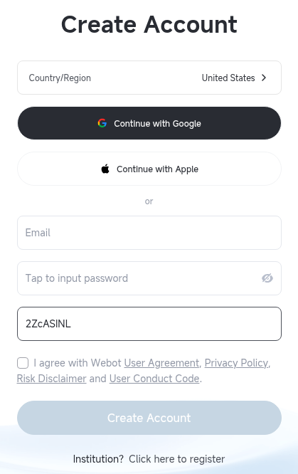

Quick answer: The Webot Referral Code is 2ZcASINL. Type it into the Referral code (optional) field on the Webot sign-up form, before you submit. Enter it exactly as 2ZcASINL: eight characters with a lower-case c, no spaces.
2ZcASINL
Checked November 2026.
This guide focuses on the numbers: what 2ZcASINL changes, and what stays the same.
Webot is the US arm of Pionex, a crypto exchange known for built-in trading bots such as grid and DCA bots.
Whether a referral is recorded, and whether anyone receives a reward, is decided Webot under its own program terms. Typing the code is no guarantee of a bonus for you, and it does not guarantee a reward for us.
Example: count the characters: 2, Z, c, A, S, I, N, L. That is eight. A capital C in third place means the code is wrong.
A code is not magic: 2ZcASINL keeps the rest the same, including terms and limits, and Webot alone decides whether a referral is credited.
Use the Referral code (optional) field on the Webot sign-up form. Fill it in before the final button, not afterwards.

Next, finish the ID checks, wait for approval, and after that fund the account if you choose to.
It takes about three minutes.
People search many names, such as invite code or referral code. On Webot there is one box, the Referral code (optional) field, and 2ZcASINL goes there whatever the name.
The usual causes:
Referral codes are normally tied to an account when it is created. Put it in on the first screen rather than planning to add it later.
Spelled out: 2-Z-c-A-S-I-N-L, the digit 2, capital Z, a lower-case c, then capital A, S, I, N, L (the I is a capital i). Copy and paste to avoid typos.
2ZcASINL is meant for people opening a new Webot account; existing accounts do not qualify.
One account per person: making duplicate accounts usually breaks Webot's terms.
Webot can change or end its terms at any time, and what its site says wins.
Have these ready: an email or phone number, a password, a government ID for the checks, and 2ZcASINL on the clipboard. It saves jumping between apps mid-form.
Treat the example above as an illustration, not a quote. What you actually see depends on Webot's current terms and your own activity.
Typing it is free, and the benefit is fixed by Webot's published terms. If you are new, nothing is lost as long as you type it correctly before you create the account.
First re-reading the account settings for a code entry. If it is missing, contact Webot support instead of opening another account, which is usually against the rules.
In the app the Referral code (optional) box appears just above the button that creates your account. Some keyboards capitalise the c, so check it before you continue.
2ZcASINL. It goes in the Referral code (optional) box before the last step.
Yes. As with other US platforms, Webot asks for identity verification before you deposit and trade.
Treat it as case-sensitive. Type it exactly as 2ZcASINL, with a lower-case c.
Not everywhere. The sign-up flow tells you if your location is not supported.
No. Webot decides under its own program terms whether a referral is recorded or rewarded. It is not guaranteed for you or for us.
No. We are independent; see Webot's current terms for what applies.
Risk note: digital assets can drop sharply, and a lower fee or a bot does not change that. Treat this as general information, not advice.
Disclosure: the code is ours; if Webot credits the referral, we could earn a reward. You pay nothing extra.